4.1.1 Inicios de sesión en Windows
1. Opciones de inicio de sesión
Para obtener acceso a las opciones de inicio de sesión, hay que ir Inicio > Configuración > Cuentas > Opciones de inicio de sesión (ver imagen inferior).
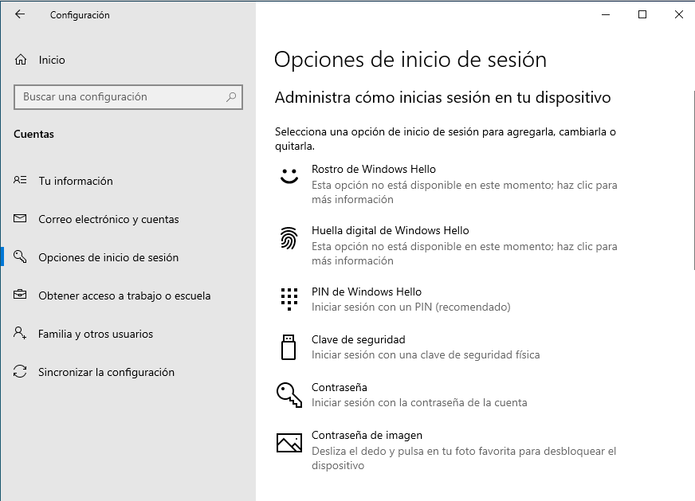
Figura 1. Opciones de inicio de sesión.
Como se puede apreciar en la figura, se puede administrar el inicio de sesión donde, se podría activar el acceso por huella dactilar, imagen, contraseña, clave de seguridad física (tipo yubico), etc. Dependiendo de la política de accesos de la organización, se activarán las opciones deseadas.
En el siguiente enlace, tienes toda la información que Microsoft ofrece para la administración del inicio de sesión.
2. Registro de inicios de sesión
Desde el punto de vista de auditoría, es interesante monitorizar los inicios de sesión para conocer qué usuario y cuándo ha accedido al sistema. Por lo tanto, necesitamos saber cómo ver quién inicia sesión en Windows 10 y cuándo lo hace ya que por defecto, Windows no nos permite conocer si un usuario ha intentado iniciar sesión en el equipo, si lo ha conseguido ni cuándo lo ha hecho.
Windows cuenta con funciones de monitorización, control y auditorías que registran todo lo que ocurre en el equipo, desde errores en aplicaciones, problemas de seguridad, así como la posibilidad de registrar todos los inicios de sesión que se realizan en el equipo, sin embargo, esta opción viene desactivada por defecto, por lo que es necesario activarla.
Para indicar a Windows que registre los inicios de sesión error y/o correctos, se tiene que realizar lo siguiente:
- Habilitar el registro de inicio de sesión, para ello, ejecutamos gpedit.msc para que nos abra la ventana de directivas de grupo. Una vez allí, hay que acceder a: Configuración del equipo > Configuración de Windows > Configuración de seguridad > Directivas locales > Directiva de auditoría. Una vez allí, hay que localizar la opción 'Auditar eventos de inicio de sesión' y marcar lo que se necesite, para este caso de ejemplo, se marcan los dos: auditar los correctos y erróneos. Una vez marcadas estas opciones, hay que pulsar 'Aceptar' y cerrar la ventana de directivas de grupo. Desde este momento, Windows comenzará a tener en cuenta esta opción, es decir, a registrar los inicios de sesión ya sean correctos o no.
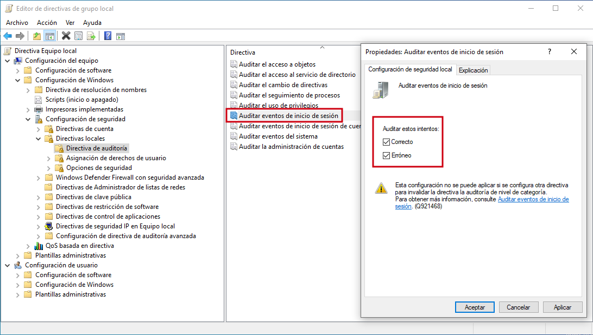
Figura 2. Marcado de las dos opciones.
Una vez habilitado el registro de inicio de sesión, ya podemos consultar en el 'Visor de eventos' los registros que vaya guardando el sistema. Para acceder puedes ejecutar el comando eventvwr.msc.
Una vez se accede al 'Visor de eventos', en la ruta Registros de Windows > Seguridad, podemos observar todos los eventos de seguridad del sistema.
Windows guarda muchos registros dentro de esta categoría, pero el que nos interesa, es el de inicio de sesión, el cual, podemos encontrarlo por su ID (identificador de Evento), que es 4624. Una vez localizado el evento, si hacemos doble click sobre él, podemos verlo en detalle.
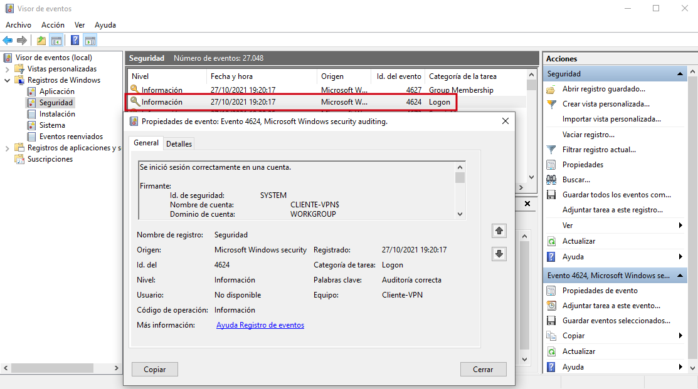
Figura 3. Evento de inicio de sesión en detalle.
Con esta opción habilitada tendremos el control sobre los inicios de sesión, es decir, vamos a poder consultar quién ha intentado iniciar sesión en el equipo, cuándo lo ha hecho y si ha tenido éxito o no.
3. Bloqueo de cuentas en equipo con usuario local
En un equipo Windows 10 con usuario local (no es un cliente del dominio), se puede configurar bloqueos automáticos de cuentas ante ciertas circunstancias.
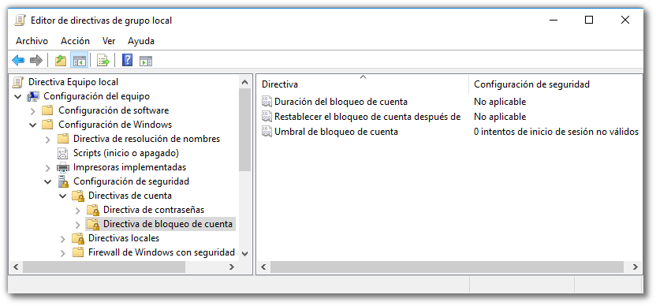
Figura 4. Editor de directivas de grupo local.
Ejemplo, podemos activar el bloqueo del equipo durante un tiempo cuando los intentos de inicio de sesión supere un valor, ejemplo: Si se desea bloquear el equipo durante 2 horas si el número de intentos erróneos es superior a 5 hacemos:
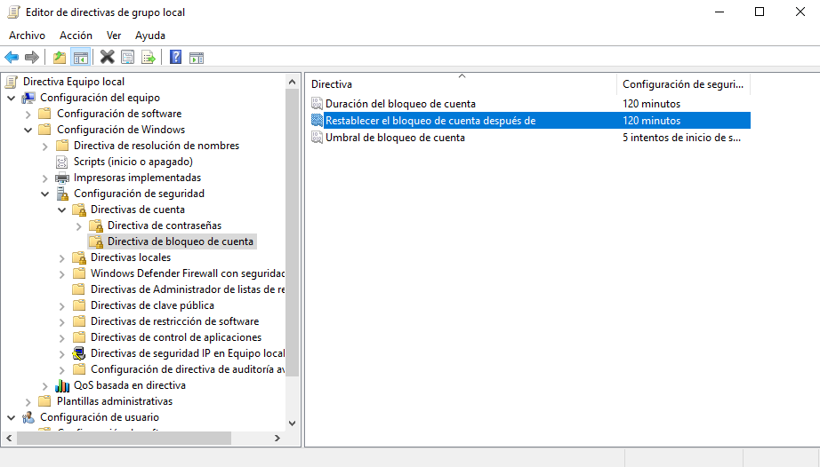
Figura 5. Configuración de bloqueo de cuenta.
4. Bloqueo de cuentas del dominio
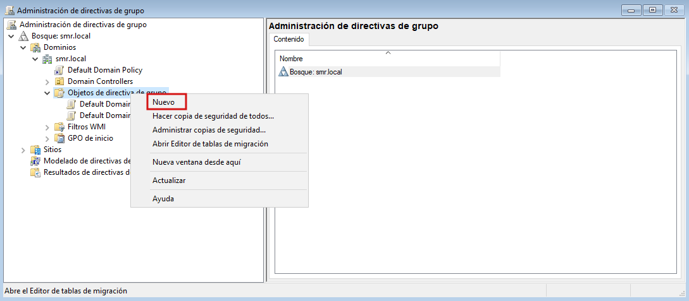
Figura 6. Crear nueva directiva de grupo.
En la ventana que aparece, hay que insertar un nombre descriptivo de la acción que realizará la GPO, en este caso de ejemplo, Bloqueo-Cuentas.
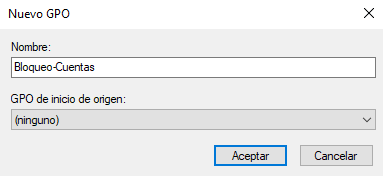
Figura 7. Nombrar a la nueva directiva de grupo.
Pulsamos 'Aceptar' y la nueva GPO aparecerá en el árbol de la izquierda del panel.
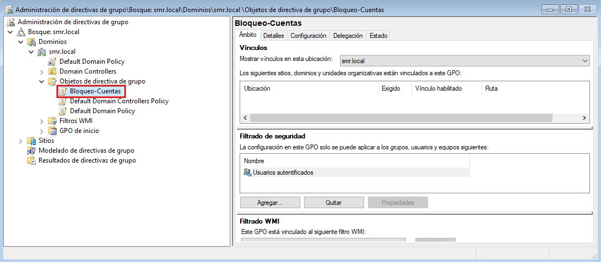
Figura 8. Directiva de grupo Bloque-Cuentas creada.
A continuación, hay que editar la directiva de grupo creada para su configuración, para ello, nos situamos sobre 'Bloqueo-Cuentas' (ver figura 8) y pulsamos el botón derecho del ratón, para seleccionar la opción 'Editar'. En la nueva pantalla que aparece, hay que acceder a: Configuración del equipo > Configuración de Windows > Configuración de seguridad > Directivas de cuenta > Directiva de bloqueo de cuenta.
Una vez allí, podemos activar el bloqueo del equipo durante un tiempo cuando los intentos de inicio de sesión supere un valor, ejemplo: Si se desea bloquear el equipo durante 1 hora si el número de intentos erróneos es 3 , hay que rellenar los campos tal como están en la figura 8. Para guardar la configuración de la directiva de grupo, hay que cerrar el editor de directivas de grupo.
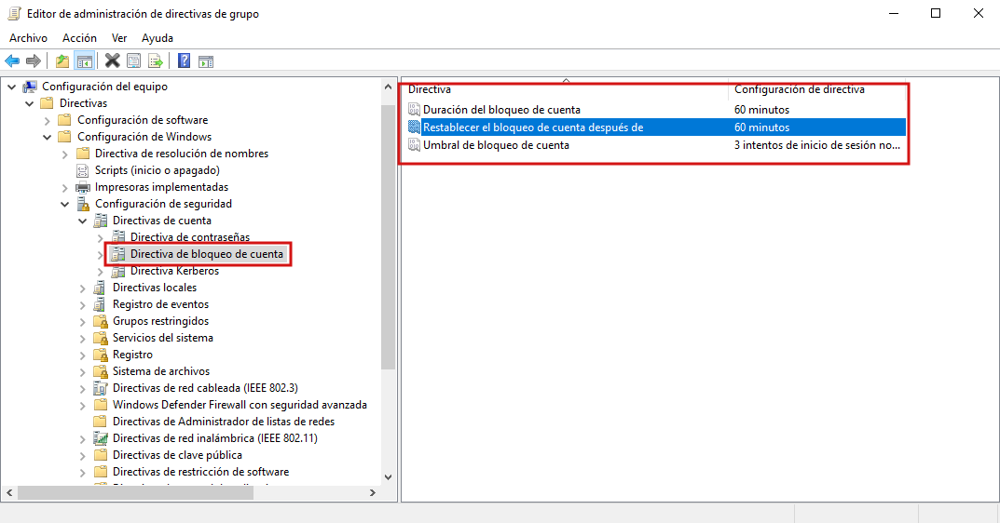
Figura 8. Configurar los parámetros de bloqueo de cuenta en la Directiva de grupo Bloque-Cuentas.
Si la duración del bloqueo de la cuenta se establece en 0, la cuenta de usuario permanecerá bloqueada.
La directiva de dominio predeterminada, por defecto tiene establecida la configuración para la directiva de bloqueo de cuenta para que nunca se bloque una cuenta de usuario. Por lo tanto, la directiva de bloqueo no tendrá los efectos de bloqueo de cuenta que se han establecido hasta que se deshabilite la esta parte de la configuración en la directiva de dominio predeterminada. Para ello, hay que acceder a: Objetos de directiva de grupo > Default Domain Policy (ver figura inferior).
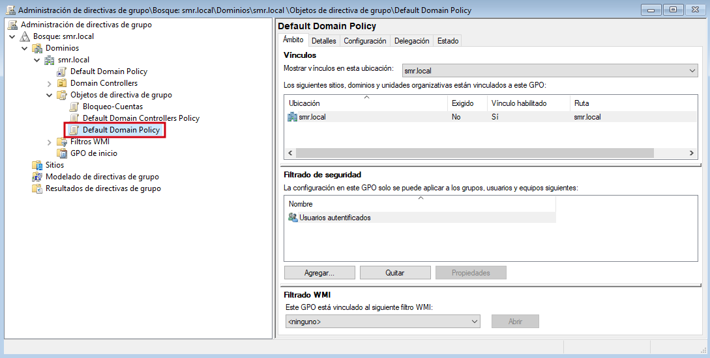
Figura 9. Accedo a la Directiva de dominio por defecto.
A continuación, seleccionamos Default Domain Policy y hacemos click con el botón derecho del ratón y seleccionamos Editar. En la nueva pantalla que aparece, hay que acceder a: Configuración del equipo > Configuración de Windows > Configuración de seguridad > Directivas de cuenta > Directiva de bloqueo de cuenta.
Hay que acceder a: Configuración del equipo > Configuración de Windows > Configuración de seguridad > Directivas de cuenta > Directiva de bloqueo de cuenta.
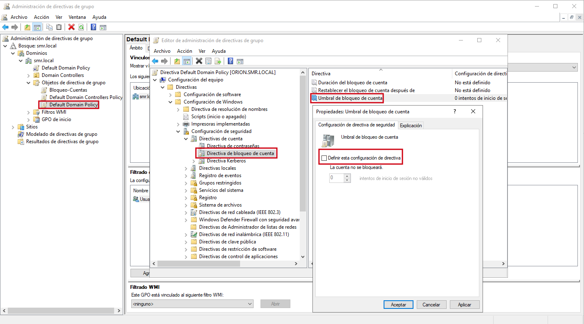
Figura 10. Edición de la directiva de bloqueo de cuenta en la Directiva de dominio por defecto.
Para evitar generar un tráfico de gestión excesivo en la red, las directivas de grupo no se actualizan inmediatamente tras su modificación, sino que está establecido un intervalo de 5 minutos entre actualizaciones automáticas. No obstante, este intervalo se puede modificar en las propias directivas de grupo (ver página de Microsoft Technet). De todas maneras, no es necesario modificar este intervalo para comprobar la correcta aplicación de las directivas de grupo, basta con escribir en la consola cmd:
C:\gpupdate
oC:\gpupdate /force
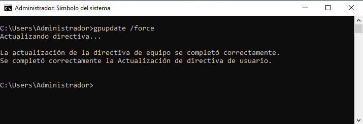
Figura 11. Forzar la actualización de directivas.
En este momento, todos los usuarios que se autentiquen en el controlador del dominio se le aplicará la restricción configurada en la directiva Bloqueo-Cuentas.
Como prueba, se accede con un usuario del dominio y después de 3 intentos de contraseña errónea, se bloquea la cuenta (figura
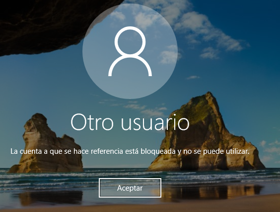
Figura 12. Cuenta bloqueada.
Si se desea desbloquear la cuenta antes del período de desbloqueo automático, hacemos:
Con el usuario Administrador del dominio, hay que acceder al usuario bloqueado en en las propiedades del mismo, acceder a la pestaña Cuenta y seleccionar la casilla 'Desbloquear cuenta'. Para finalizar, hay que pulsar 'Aceptar' para que el desbloqueo de la cuenta sea efectivo.
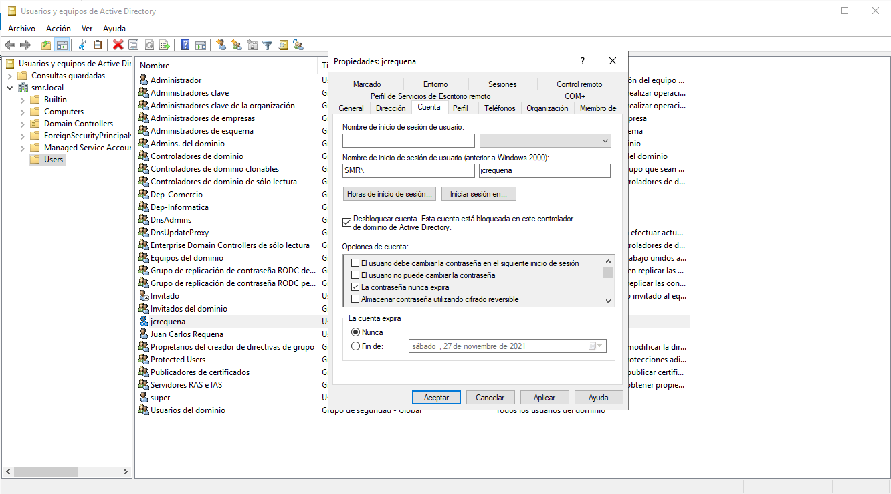
Obra publicada con Licencia Creative Commons Reconocimiento No comercial Compartir igual 4.0